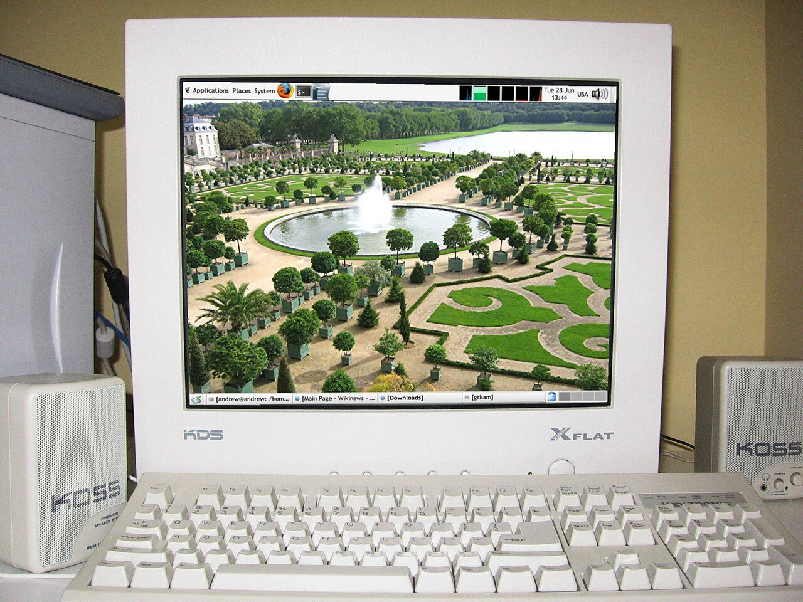

def defines a function return gives back the result Parameters can have defaults: f(x, y=2) Local variables live only inside the function A function without return gives None
def f(x, y=2):
return x * y
print(f(3)) # 6
print(f(3, 4)) # 12